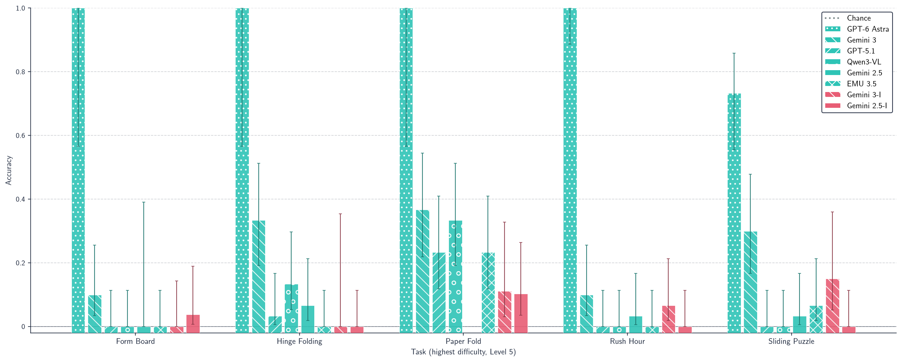
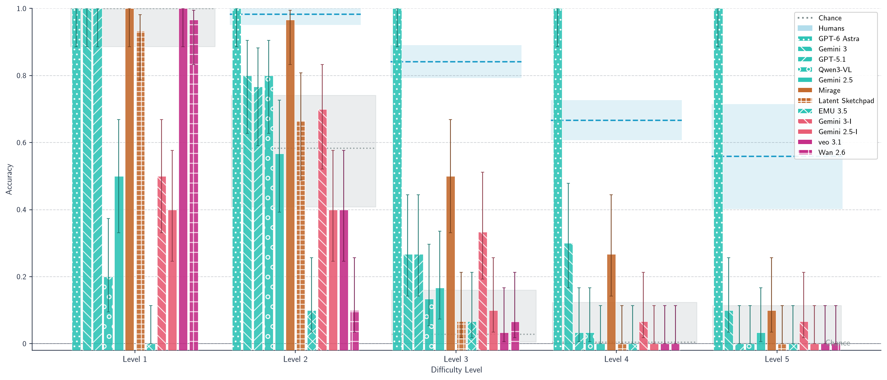
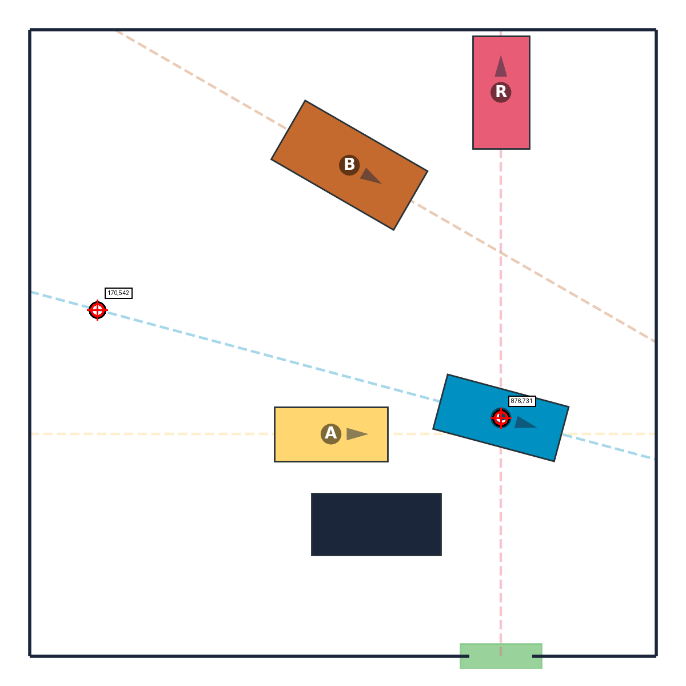
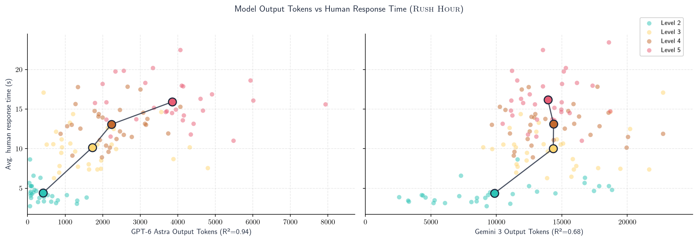
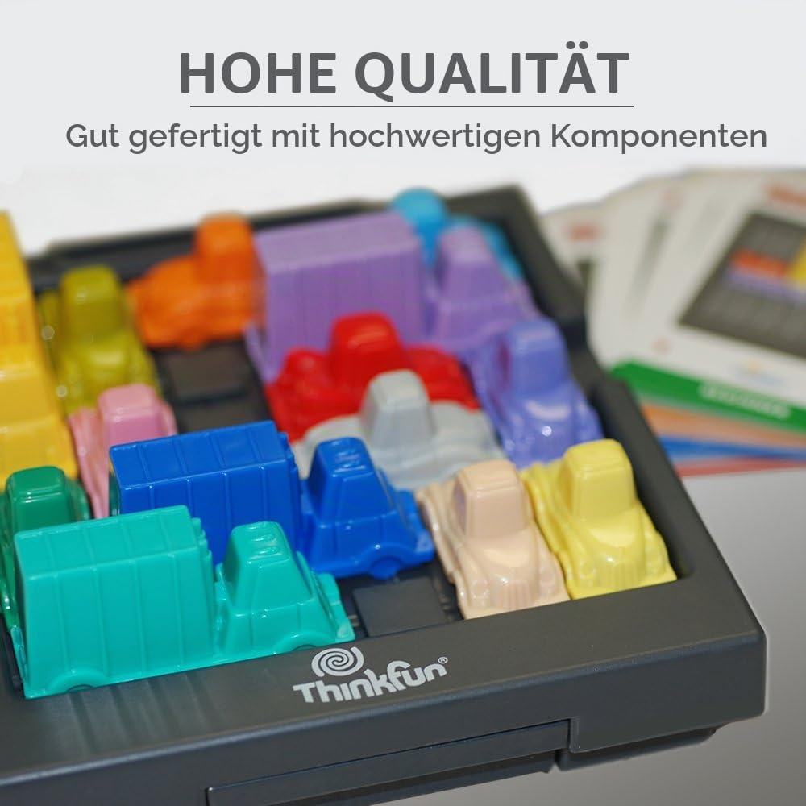
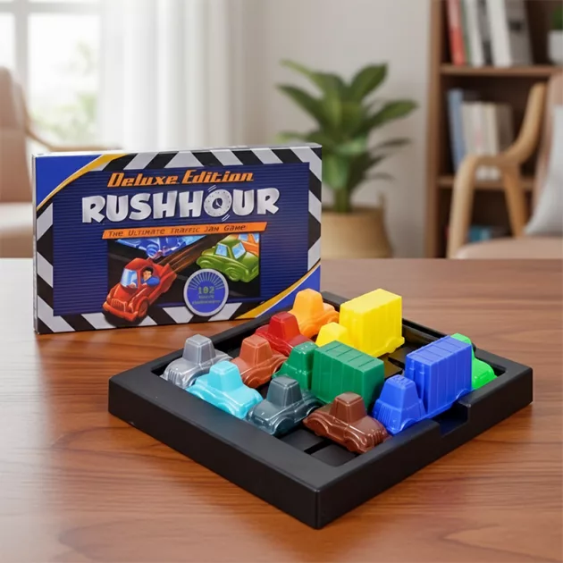

GPT-6 Astra on MentisOculi
TL;DR
GPT-6 Astra basically solves MentisOculi. Astra is the first model to solve every instance at the highest difficulty of Form Board, Rush Hour, Hinge Folding and Paper Fold and beats all other models on Sliding Puzzle. On Rush Hour it is even exceeding the human average, while all prior models collapse toward chance. It does so by reading pixel coordinates off the board, and solving the underlying mathematical problem. All answers are available in the repository.
Astra vs. frontier models at the highest difficulty

At the hardest level of every task, Astra (dotted bars) is at or near 100% on Form Board, Hinge Folding, Paper Fold and Rush Hour, and far ahead of every frontier model on Sliding Puzzle. On Sliding Puzzle Astra does not reach 100% accuracy, since it assumes the blank tile to be in the bottom right corner in the final configuration. If we adjust for this wrong prior, Astra reaches 100% accuracy on Sliding Puzzle as well.
Rush Hour: solved at every level

Astra reaches 100% accuracy at all five difficulty levels (30 instances each). For reference, the human average falls from 98% at level 2 to 56% at level 5 — so at the hardest levels Astra exceeds human performance. Every other model — frontier MLLMs, native image-generation models, video models, and trained baselines — drops sharply as the number of required moves grows.
How: it reads pixel coordinates

In Rush Hour, Astra's reasoning repeatedly locates each vehicle by its pixel coordinates and orientation before planning any moves — effectively reconstructing the grid from the image. In its own words:
“I'm evaluating the coordinates for various cars and their boundaries, detailed positions and orientations. [...] C is moving northwest from coordinates 876,731 to 170,542. ”
Reasoning effort tracks human difficulty

Astra's reasoning effort tracks human-perceived difficulty almost perfectly (R² = 0.94); it spends more tokens exactly where humans also require more time to solve the instance. It uses roughly a quarter of the tokens of the best prior frontier model, Gemini 3 (R² = 0.68). Astra is both better aligned with human difficulty and markedly more token-efficient.
It generalizes to real photographs
The result is not limited to our rendered boards: Astra also solves photographs of physical Rush Hour sets. It is not infallible — when it misreads the scene, the plan fails.

✓ Correct. A photo of a physical board; Astra returns a clean, valid solution.

✗ Failure. Here Astra wrongly extracts the orientation of the orange car, and its plan does not solve the board.